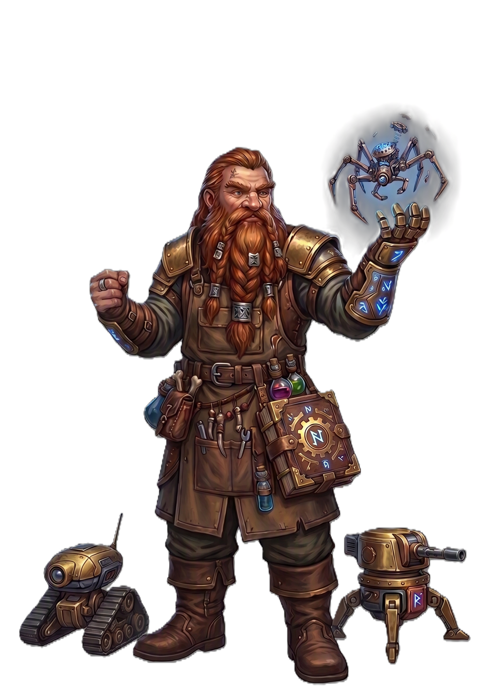

| Rolle | Halbzauberer · Bombenwerfer · Infusionen · Beschwörer · Unterstützer |
| Zauberertyp | Halbzauberer Keine Zauberslots — Tüftler-Punkte |
| Primärer Schadensattribut | Intelligenz (INT) |
| Sekundärer Schadensattribut | Geschicklichkeit (DEX) |
| Zauberattribut | Intelligenz (INT) |
| TP (L1) | 10 |
| TP pro Level | 6 |
| Rüstung | Leichte Rüstung |
| Waffen | Tüftlerwaffen — Schrotflinte, Dolche, Keulen, Armbrüste |
| Rettungswürfe | Intelligenz (INT), Geschicklichkeit (DEX) |
| Attributsteigerung (Level) | 4, 8, 12, 16 |
| Fertigkeiten (2 zur Auswahl) | Technik, Handwerk, Alchemie, Nachforschung, Logik |
Der TÜFTLER ist der Erfinder und Bombenwerfer — er nutzt Tüftler-Punkte statt Zauberslots, wirft Bomben als Bonus-Aktion und verzaubert Waffen mit Infusionen. Intelligenz treibt seine Bomben und Infusionen, Geschicklichkeit seine Schrotflinte. Seine Bomben decken alle Elemente ab: Feuerbombe (2W6 FLAMME), Frostbombe (festgehalten), Blitzbombe (3W6 STURM), Giftbombe (vergiftet), Meisterbombe (6W6+2W6 Flächeneffekt). Dampfstoß wirft Gegner zurück, Arkane Kanone ist eine stationäre Waffe die 3 Runden lang Schaden macht. Schrotflinte (2W4 PHYSISCH) ist sein Basis-Angriff. Mit Infusion (L5) verzaubert er Waffen/Rüstungen mit +1, mit Alchemistische Bombe (L2) bekommt er seinen Bomben-Pool (Tüftler-Punkte = Level, pro Kurze Rast). Schutzmechanismus (L6) reduziert Schaden als Reaktion. Mechanischer Begleiter (L10) gibt ihm einen permanenten Begleiter. Meisterinfrafusion (L14) verstärkt seine Infusionen mit +2 und Elementar-Schaden. Meisterhandwerker (L18) lässt ihn dauerhafte magische Gegenstände herstellen. Dampfgolem-Form (L20) verwandelt ihn in einen Dampfgolem. Er ist der vielseitigste Nicht-Zauberer — Schaden, Kontrolle, Unterstützung und Beschwörung durch Technik.
| Level | Fähigkeit | Beschreibung |
|---|---|---|
| L1 | Tüftlergeist | Passiv: Vorteil auf Handwerks- und Nachforschungs-Proben. |
| L2 | Alchemistische Bombe | Tüftler-Punkte-Pool (Level = Punkte, pro Kurze Rast). Bonus-Aktion: Bombe werfen, 1W6+INT Elementar-Schaden, 1 Feld Flächeneffekt. |
| L3 | Tüftler-Technik | 1 zusätzliche Infusion (RP-Marker). |
| L5 | Infusion | 1/Lange Rast: Verzaubere Waffe/Rüstung mit +1 Bonus für 1 Stunde. |
| L6 | Schutzmechanismus | Reaktion: Reduziere Schaden um 1W6+Level (alle Schadenstypen). |
| L10 | Mechanischer Begleiter | Beschwöre einen permanenten mechanischen Begleiter. |
| L14 | Meisterinfrafusion | Passiv: Infusionen geben +2 und Elementar-Schaden. |
| L18 | Meisterhandwerker | Passiv: Dauerhafte magische Gegenstände herstellen. |
| L20 | Dampfgolem-Form | Verwandle dich in einen mechanischen Golem (Form-System: STEAM_GOLEM_FORM). |
Der TÜFTLER nutzt Tüftler-Punkte statt Zauberslots (Tüftler-Punkte = Level, pro Kurze Rast). Bomben sind Bonus-Aktionen. Alle Fähigkeiten nutzen INT als Attribut.
| Fähigkeit | Aktion | Nutzung | Level | Beschreibung |
|---|---|---|---|---|
| Schrotflinte | Aktion | Basisangriff — unbegrenzt | L1 | PHYSISCH 2W4 Physisch, Angriffswurf, Reichweite 5. |
| Fähigkeit | Aktion | Nutzung | Level | Beschreibung |
|---|---|---|---|---|
| Feuerbombe | Bonus-Aktion | Tüftler-Punkt | L2 | FLAMME Flächeneffekt 5ft: 2W6 Feuer. |
| Frostbombe | Bonus-Aktion | Tüftler-Punkt | L2 | FROST Flächeneffekt 5ft: 1W6 Frost + GES-Rettungswurf oder festgehalten. |
| Blitzbombe | Bonus-Aktion | Tüftler-Punkt | L2 | STURM Flächeneffekt 5ft: 3W6 Blitz + GES-Rettungswurf (halber Schaden bei Erfolg). |
| Giftbombe | Bonus-Aktion | Tüftler-Punkt | L2 | NATUR Flächeneffekt 5ft: 1W6 Natur + KON-Rettungswurf oder vergiftet (3 Runden). |
| Meisterbombe | Bonus-Aktion | Tüftler-Punkt | L10 | PHYSISCH Flächeneffekt 10ft: 6W6 Physisch + 2W6 Feuer. |
| Fähigkeit | Aktion | Nutzung | Level | Beschreibung |
|---|---|---|---|---|
| Dampfstoß | Aktion | Tüftler-Punkt | L2 | STURM Kegel 15ft: 3W6 Sturm + STR-Rettungswurf oder Zurückstoßen 10ft. |
| Arkane Kanone | Aktion | Tüftler-Punkt | L5 | PHYSISCH Stationäre Kanone: 4W6 Physisch pro Runde für 3 Runden im 10ft Bereich. |
| Verstärkte Rüstung | Aktion | Tüftler-Punkt | L2 | PHYSISCH +2 RK für 1 Minute (selbst). |
| Heiltrank | Aktion | Tüftler-Punkt | L2 | Berührung: Heile Verbündeten 2W4+2. |
| Reparatur | Aktion | Tüftler-Punkt | L10 | Berührung: Heile Konstrukt-Verbündeten 3W8. |
| Ressource | Mechanik | Verfügbarkeit |
|---|---|---|
| Tüftler-Punkte | Bomben und Spezialfähigkeiten (Level = Punkte) | Pro Kurze Rast |
| Infusion | Waffe/Rüstung mit +1 verzaubern (1 Stunde) | 1/Lange Rast, ab L5 |
| Schutzmechanismus | Schaden reduzieren (1W6+Level, alle Typen) | Reaktion, ab L6 |
| Mechanischer Begleiter | Permanenter mechanischer Begleiter | Ab L10 |
| Dampfgolem-Form | Verwandlung in Dampfgolem (STEAM_GOLEM_FORM) | Ab L20 |